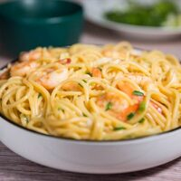

|  |
- 8 ounces fettuccine
- 1 pound medium shrimp peeled and deveined
- Kosher salt and freshly ground black pepper to taste
- 8 tablespoons 1 stick unsalted butter, divided
- 4 cloves garlic minced
- 1/2 teaspoon dried oregano
- 1/4 cup freshly grated Parmesan
- 2 tablespoons chopped Green onion
|